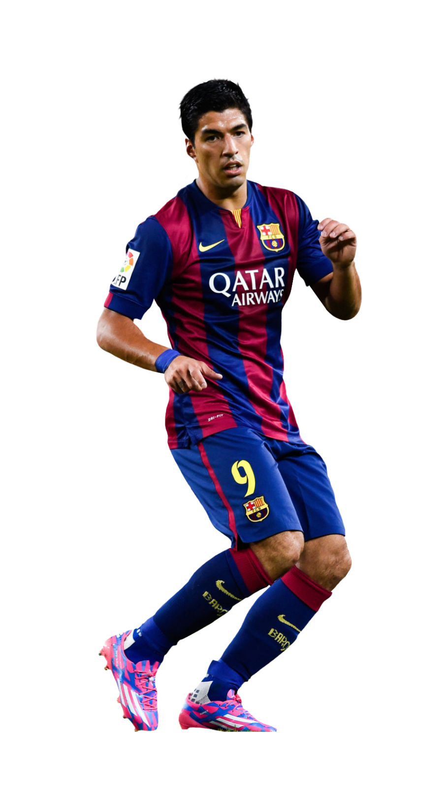

Suárez
Luis Alberto Suárez Díaz, conocido simplemente como Luis Suárez, es un futbolista uruguayo que juega como delantero en el F. C. Barcelona y en la selección uruguaya de fútbol.
Comenzó su carrera profesional en el Club Nacional de Football, donde conseguiría un Campeonato Uruguayo. A la edad de 19 años emigró a Holanda para jugar en el FC Groningen de la Eredivisie. En 2007 fue fichado por el Ajax de Ámsterdam. Su carácter y capacidad goleadora lo llevaron, tras dos años, a ser capitán del club a partir de la temporada 2009/10, siendo el primer futbolista sudamericano en lograrlo. En esa misma temporada en que fue nombrado capitán, se consagró goleador de la Eredivisie, con 35 tantos en 33 partidos y obtuvo el récord de ser el jugador extranjero con más goles en una temporada en la liga en Holanda.La IFFHS lo nombraría el máximo goleador mundial en Primera División. Además sería el máximo anotador de Europa al convertir 49 goles en 48 partidos, en todas las competencias que disputó.Su increíble racha goleadora lo llevarían a ser nombrado el futbolista del año en los Países Bajos.
En 2011 sería fichado por el Liverpool Football Club, despidiéndose del equipo holandés habiendo ganado una Eredivisie, una Copa de los Países Bajos y una Supercopa de los Países Bajos. Dicho fichaje se llevaría a cabo por 26.5 millones de euros. En el equipo inglés se haría rápidamente titular indiscutido. En 2012 ganaría la Copa de la Liga de Inglaterra siendo el primer título que obtendría con su nuevo club. En la temporada 2012/13 sería nombrado parte del equipo ideal de la Premier League y segundo mejor jugador de la competición. En la temporada 2013/14 llegó al punto más alto de su carrera en Liverpool, conquistando 31 goles en 30 partidos y obteniendo así el título de goleador y mejor jugador de la Premier League en dicha temporada, donde estuvo cerca de alcanzar el título que finalmente quedó en manos de Manchester City. Su impresionante registro goleador lo hizo acreedor de la Bota de Oro 2013-14, premio que compartió con el portugués Cristiano Ronaldo.
Su brillante actuación la temporada anterior le valió el pase al FC Barcelona por 81 millones de euros, convirtiéndose nuevamente en el pase más caro de la historia de un futbolista uruguayo. Actualmente integra junto al argentino Lionel Messi y al brasileño Neymar el trío llamado MSN (por las iniciales de los jugadores), considerado una de las mejores delanteras del mundo.
A nivel de selecciones Suárez debutó oficialmente en la Copa Mundial Sub-20 de Fútbol de 2007 y en la selección absoluta debutó el mismo año en un partido amistoso jugado contra la selección de Colombia. Fue participe de la Copa Mundial de Fútbol de 2010 donde la selección de Uruguay alcanzó las semifinales del torneo, quedándose con el cuarto puesto. En 2011 ganó la decimoquinta Copa América para su selección, siendo éste su primer título internacional. Además fue nombrado el mejor jugador de la competencia. En 2013 se convirtió en el máximo goleador histórico de su selección en partidos oficiales, superando el récord que ostentaba Diego Forlán. En 2014 pasó a ser el máximo goleador absoluto, superando los 42 goles de Héctor Scarone.
